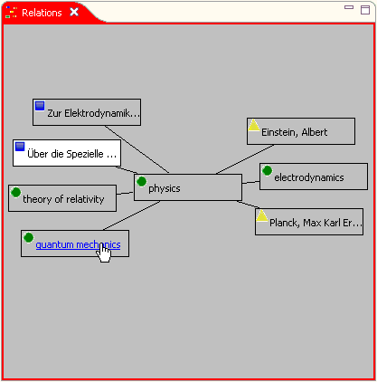
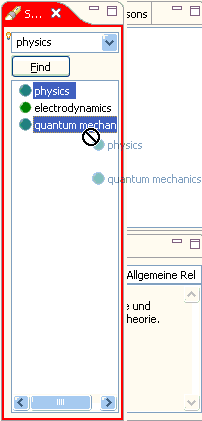

The Relations browser is your main tool for managing the item's context.
Use this browser to surf into the item's context, following
it's relations one at a time.
You can do this using your mouse holding the Shift-key
down, thus rendering the related
item under the mouse pointer as clickable link in the browser view.
Clicking this item moves it to the center, thus displaying this item's
context.

Clickable relation giving a surf experience.
Another aspect of context management is adding additional relations or removing unneeded ones. You can add a relation by dragging it from one of the selection views and dropping it on an item displayed in the Relations browser. If the drop target is the center item, the new relation is immediately displayed in the browser view. If the drop target is a related item, a message is displayed in the status line confirming that the relation has been added successfully. However, an item can be related to another only if this item is not related yet. Dropping an item to another one a second time doesn't make this item related twice.
Using the Search view is a convenient possibility to add multiple items at once. Enter a search query into the search field to display the search result containing the items of interest. Select the items you want to relate with an item displayed in the Relations browser, then drag them to the Relations browser and drop them on the target item.
You can use the Bookmarks and Last Changes views to proceed in an analogous way.

Drag'n drop with multiple items using the search result.
You can use drag'n drop to remove an unneeded relation too. Dragging an item to the selection views and dropping it there will remove this item's relation to the centered item in the Relations browser.